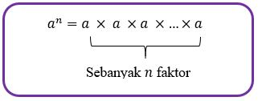

siswa mampu memahami bilangan bulat beserta operasi hitungnya
Siswa mampu mengenal Bilangan berpangkat
Siswa mampu melakukan operasi hitung Bilangan berpangkat positif
Siswa mampu memahami sifat-sifat bilangan berpangkat positif
Pengertian Bilangan berpangkat
Bilangan berpangkat positif adalah suatu bilangan dipangkatkan dengan bilangan bulat. Bilangan berpangkat bulat positif biasa disebut bilangan berpangkat sebenarnya. Bilangan berpangkat diperoleh dari perkalian berulang bilangan itu sendiri. Perhatikan bilangan berpangkat berikut.
Umumnya sebuah bilangan real dilambangkan dengan huruf \[a\], sementara bilangan bulat dilambangkan dengan huruf \[n\], maka bilangan berpangkat dapat dituliskan menjadi \[a^{n}\] (dibaca \[a\] pangkat \[n\]), yaitu perkalian \[a\] secara berulang sebanyak \[n\] faktor. Bilangan berpangkat dapat dinyatakan sebagai berikut.

dengan:
\[a^{n}\] : disebut bilangan berpangkat
\[a\] : disebut bilangan pokok
\[n\] : disebut pangkat atau eksponen
Operasi hitung bilangan berpangkat
Bilangan berpangkat dapat dioperasikan dengan bilangan berpangkat lainnya. Untuk lebih jelasnya perhatikan contoh berikut:
jadi hasil dari \[6\frac{2}{5} : 0,6 = 10\frac{2}{3} \]
pertanyaan
1 dari 3
tentukan hasil perkalian dan pembagian berikut.
note: semua jawaban memakai pecahan biasa
petunjuk: klik tombol buat untuk mengganti soal dan klik tombol cek untuk memeriksa jawaban
=
2 dari 3
Rahma mempunyai kain sasirangan sepanjang \[6\frac{1}{5}\] meter. Kain sasirangan akan dibagikan ke empat temannya dengan panjang yang sama. Berapa meter panjang kain sasirangan yang diterima setiap teman rahma?
note: jawaban memakai bilangan desimal
=
meter
3 dari 3
Pak joni memotong kayu ulin menjadi 6 bagian sama panjang. Jika panjang setiap potong kayu ulin 0,65 meter, berapa panjang kayu ulin tersebut?